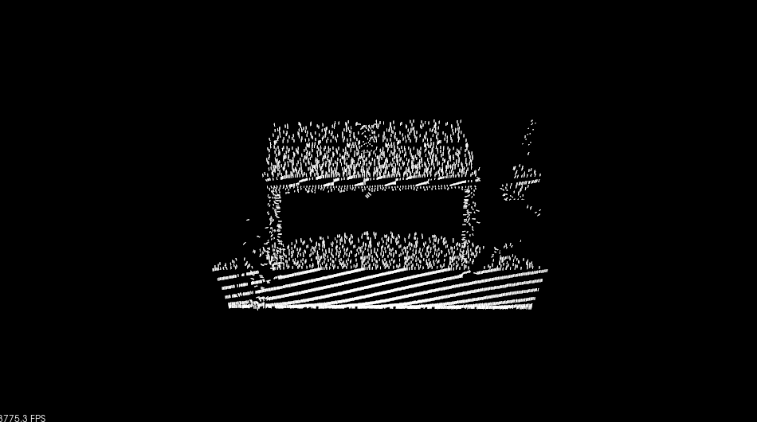

3D点云特征描述与提取是点云信息处理中最基础也是最关键的一部分。点云的识别、分割、重采样、配准、曲面重建等大部分处理算法，都严重依赖于特征描述和提取的结果。从尺度上来说，一般分为局部特征的描述和全局特征的描述，例如局部的法线等几何形状特征的描述，全局的拓扑特征的描述，都属于3D点云特征描述和提取的范畴。
特征描述与提取相关的概念和算法
1、3D形状内容描述子(3D shape contexts)
利用描述子建立曲面间的对应点在3D物体识别领域有广泛的应用，采用一个向量描述曲面上指定点或邻域的形状特征，通过匹配向量的值来建立不同曲面点的对应关系，此相邻则称为指定点的描述子，经典描述子的3D形状内容描述子结构简单，辨别力强，且对噪声不敏感。
2、旋转图像(spin image)
旋转图像特征描述子主要用于3D场景中的曲面匹配和模型识别。
PCL中描述三维特征相关基础
理论基础：
在原始表示形式下，点的定义是用笛卡尔坐标系x,y,z相对于一个给定的原点来简单表示的三维映射系统的概念。假定坐标系的原点不随着时间而改变，这里有两个点p1和p2分别在时间t1和t2被捕获。有着相同的坐标，对这两个点作比较其实是属于不适定问题(ill-posed problem)，因为虽然相对于一些距离测度它们是相等的，但是它们取样于完全不同的表面，因为当把它们和临近的其他环境中点放在一起时，它们表达着完全不同的信息，这是因为在t1和t2之间局部环境有可能发生变化。一些获取设备也许能够提供取样点的额外数据，例如强度或表面反射率等，甚至颜色，然而这并不能完全解决问题，单从两个点之间来对比这仍然是不适定问题。由于各种不同需求需要进行对比以便能够区分曲面空间的分布情况，应用软件要求更好的特征度量方式，因此作为一个单一实体的三维点概念和笛卡尔坐标系被淘汰了，出现了一个新的概念取而代之:局部描述子。文献中对这一概念的描述有许多不同的命名，如：形状描述子(shape descriptors)或几何特征(geometric feature)，本文中剩余部分都统称为点特征表示。通过包括周围的邻域，特征描述子能够表征采样表面的几何性质，它有助于解决不适定的对比问题，理想情况下相同或相似的表面上的点的特征值将非常相似(相对特定度量准则)，而不同表面上的点的特征描述子将有明显差异。下面几个条件，通过能否获得相同的局部表面特征子，可以判定点特征表示方式的优劣：
（1）刚体变换--三维旋转和三维平移变化不会影响特征向量F估计，即特征向量具有平移旋转不变性。
（2）改变采样密度--原则上，一个局部表面小块的采样密度无论是大还是小，都应该有相同的特征向量值，即应该有相同的特征向量值，即特征向量具有抗密度干扰性。
（3）噪声--数据中有轻微噪声的情况下，点特征表示在它的特征向量中必须保持相同或者及其相似的值，即特征向量对点云噪声具有稳定性。
通常，PCL中特征向量利用快速Kd-Tree查询，使用近似法来计算查询点的最近邻元素，通常有两种查询类型，K邻域查询，半径搜索两种方法
法线估计实例
一旦确定邻域以后，查询点的邻域点可以用来估计一个局部特征描述子，他用查询点周围邻域点描述采样点的几何特征，描述几何表面图形的一个重要属性，首先是推断他在坐标系中的方位，也就是估计他的法线，表面法线是表面的一个重要的属性，在许多领域中都有重要的应用。
1 | #include <iostream> |
